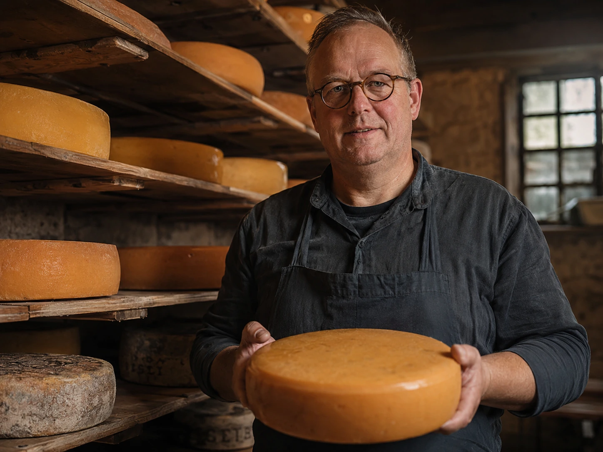
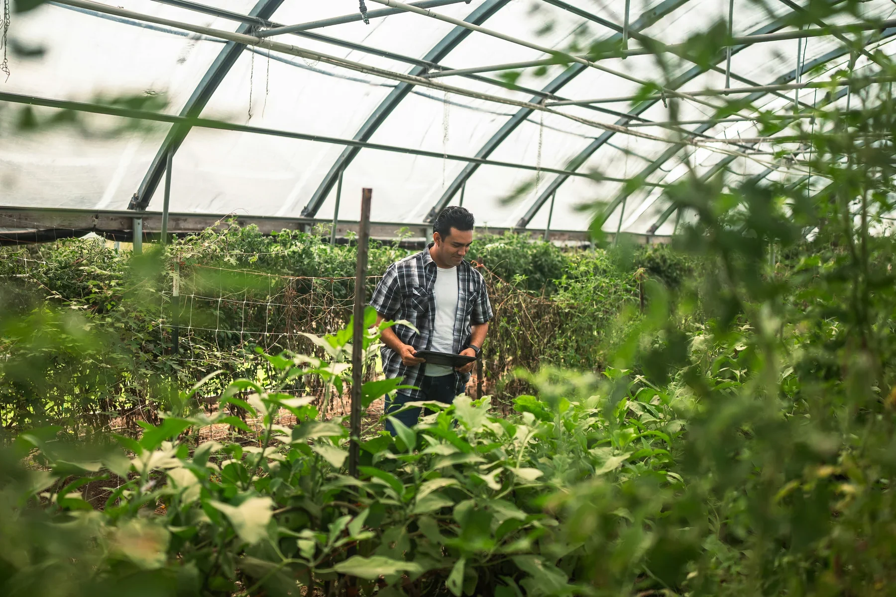
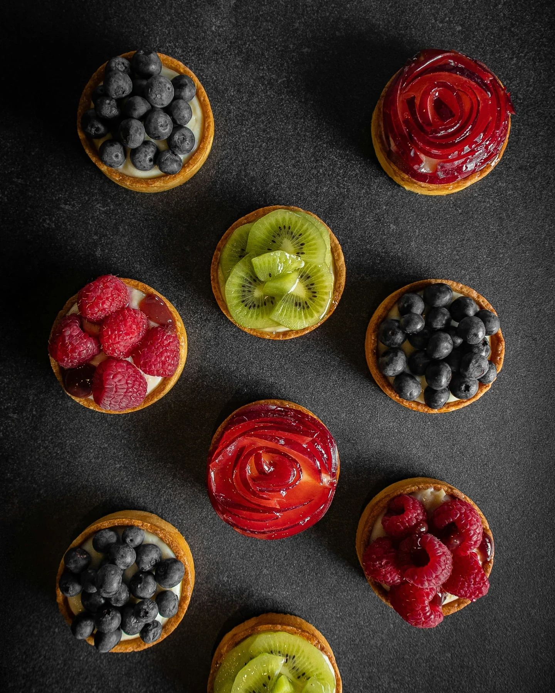
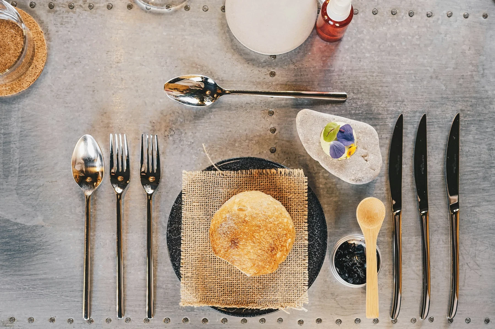
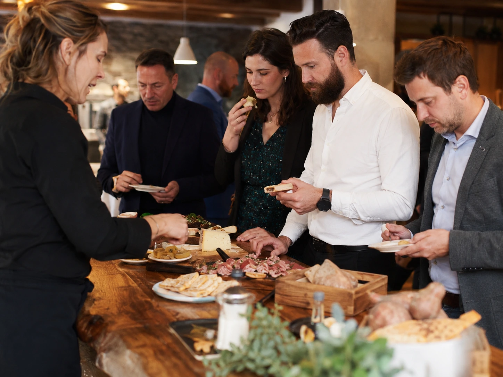

“Als je weet waar een product vandaan komt, proef je het met meer aandacht.”
De kaasmaker achter de borrelplank
Voor de kaasmaker begint kwaliteit niet pas bij het eindproduct, maar veel eerder: bij melk, rijping en het geduld om smaak te laten ontwikkelen. Juist daarom past samenwerking met een partij als Sligro goed bij ambachtelijke makers die hun product in de professionele horeca willen terugzien zonder dat het verhaal verloren gaat.
Via Sligro komt zijn kaas terecht bij ondernemers die snelheid nodig hebben, maar ook iets onderscheidends op tafel willen zetten. Op een borrelplank of lunchkaart werkt dat sterk: de ondernemer heeft een product met karakter, en de gast krijgt een gerecht dat meer vertelt dan alleen wat er op het bord ligt.
Samenwerking in de praktijk
Volgens dit type maker zit de meerwaarde in bereik en continuïteit. Sligro maakt het mogelijk om een ambachtelijk product breder toegankelijk te maken voor horecaondernemers, terwijl de identiteit van het product overeind blijft.

“Goede producten beginnen bij de bodem, het seizoen en aandacht.”
De teler die het seizoen naar de keuken brengt
Een teler ziet ieder seizoen als een nieuw hoofdstuk. Dat maakt lokale groenten zo bruikbaar voor horeca: ze geven chefs en ondernemers telkens een actuele aanleiding om iets nieuws op de kaart te zetten. Denk aan een seizoensspecial, een lunchgerecht of een wisselend garnituur dat laat zien wat er nu uit de regio komt.
De samenwerking met Sligro is voor dit soort leveranciers vooral waardevol omdat die de stap van land naar professionele keuken kleiner maakt. Voor ondernemers betekent dat minder zoekwerk en meer overzicht, terwijl de teler weet dat zijn product terechtkomt in zaken die er echt iets mee doen.
Wat de ondernemer ermee kan
Door in de menukaart of op een tafelkaart kort te benoemen dat een gerecht met seizoensgroenten uit de regio is gemaakt, krijgt een eenvoudige special direct meer context en beleving.

“Brood is vaak het begin van de beleving aan tafel.”
De bakker die de streek op tafel zet
Brood is een product dat bijna ongemerkt veel bepaalt aan tafel. Het opent de maaltijd, begeleidt een borrelplank en maakt ook bij lunch en koffie een groot verschil in uitstraling. Voor een bakker is dat precies waarom lokale samenwerking interessant is: een eenvoudig product kan toch veel zeggen over vakmanschap en herkomst.
Via Sligro belandt dit ambacht niet alleen bij één restaurant of buurtzaak, maar ook bij hotelbars, cateraars en lunchconcepten die een betrouwbare lokale basis zoeken. Daardoor wordt streekbrood meer dan een bijproduct; het wordt een drager van sfeer en verhaal.
Gastreacties
Ondernemers merken vaak dat gasten lokale details onthouden. Een broodmandje met een korte uitleg over de bakker of streek levert aan tafel vaker een gesprek op dan je op voorhand verwacht.

“Sinds we het lokale verhaal actiever delen, reageren gasten nieuwsgieriger én positiever.”
Een restaurantondernemer die meer met lokaal is gaan doen
Voor veel horecaondernemers is lokaal pas echt interessant wanneer het praktisch toepasbaar is. Dat betekent: producten die passen bij de bestaande kaart, leverbaar zijn via één vertrouwde partij en eenvoudig uitgelegd kunnen worden door het team. In deze praktijk werkt vooral de combinatie van product en verhaal goed.
De ondernemer in dit voorbeeld begon klein: eerst met een lokale borrelplank en later met een wisselende lunchspecial. Gasten vroegen vaker naar de herkomst van de kaas of het brood, en juist die gesprekken maakten het concept sterker. Het resultaat is niet alleen meer beleving aan tafel, maar ook meer vertrouwen in het aanbod.
Waarom het werkt
Lokale producten hoeven niet ingewikkeld te zijn om effect te hebben. Als de toepassing duidelijk is en het verhaal klopt, ontstaat er sneller een gerecht waar gasten over praten en naar terugvragen.

“Door te proeven en met makers te praten, zie je sneller wat op jouw kaart zou kunnen passen.”
Ondernemers die lokaal eerst willen ervaren
Voor cateraars, hotelmanagers en fastservice-ondernemers werkt proeven vaak beter dan alleen lezen. Een inspiratiedag of proeverij helpt om producten direct in context te zien: hoe combineer je ze, hoe presenteer je ze en welke vorm past bij jouw type zaak?
Juist daar ligt ook de waarde van samenwerking tussen makers, ondernemers en Sligro: alles komt samen in één moment. Je ziet het product, hoort het verhaal en bedenkt ter plekke hoe je het kunt vertalen naar een lunchspecial, borrelmoment of arrangement.
Van inspiratie naar toepassing
Na zo’n kennismaking worden ideeën concreter. Ondernemers nemen niet alleen smaak mee naar huis, maar ook taal: woorden en voorbeelden om het lokale verhaal later richting gasten te gebruiken.